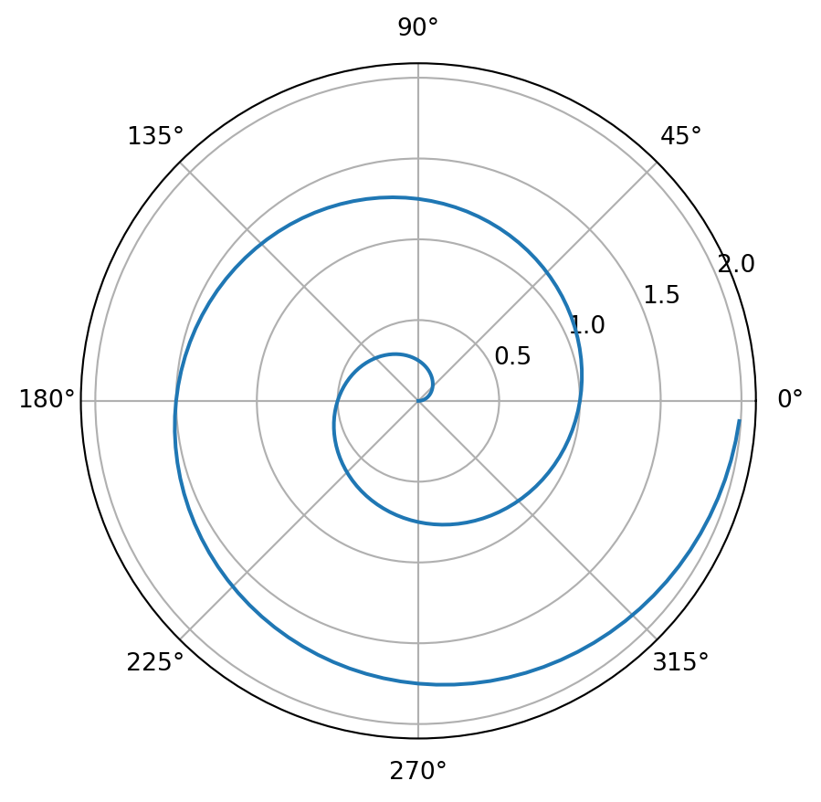
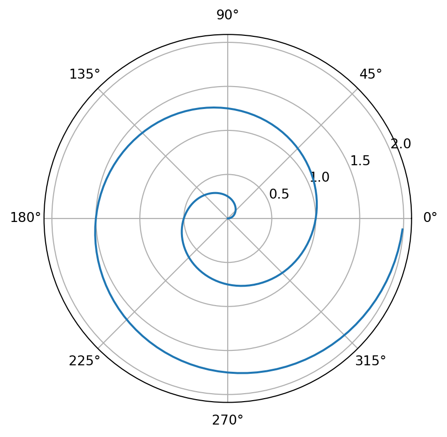

import numpy as np
import matplotlib.pyplot as plt
r = np.arange(0, 2, 0.01)
theta = 2 * np.pi * r
fig, ax = plt.subplots(subplot_kw={'projection': 'polar'})
ax.plot(theta, r)
ax.set_rticks([0.5, 1, 1.5, 2])
ax.grid(True)
plt.show()
You can create content with Jupyter notebooks.
import numpy as np
import matplotlib.pyplot as plt
r = np.arange(0, 2, 0.01)
theta = 2 * np.pi * r
fig, ax = plt.subplots(subplot_kw={'projection': 'polar'})
ax.plot(theta, r)
ax.set_rticks([0.5, 1, 1.5, 2])
ax.grid(True)
plt.show()
Below we’ll display a map using folium. When your book is built, the code for creating the interactive map is retained.
import folium
m = folium.Map(
location=[45.372, -121.6972],
zoom_start=12,
tiles='Stamen Terrain'
)
folium.Marker(
location=[45.3288, -121.6625],
popup='Mt. Hood Meadows',
icon=folium.Icon(icon='cloud')
).add_to(m)
folium.Marker(
location=[45.3311, -121.7113],
popup='Timberline Lodge',
icon=folium.Icon(color='green')
).add_to(m)
folium.Marker(
location=[45.3300, -121.6823],
popup='Some Other Location',
icon=folium.Icon(color='red', icon='info-sign')
).add_to(m)
m